The world
because we're a herd speciesCode quality
Getting rid of the lint
Learn about different aspects of code quality and tools to enforce it.
So - code quality. What do we actually mean?
There's a top-level distinction we have to make first: we can talk about the quality of the code...
- ..as it is written
- ..as it is run
In this part we're solely concerned about the first point.
Talking about the quality of the code as it is written, there are (at least) 3 different aspects:
- asyntax errors
- baesthetics
- cpolitics
First off code needs to be correct. Our editor should prevent us from writing code with syntax errors.
Even in a loosely typed language, catching syntax errors early is very possible.
Loosely typed means having to accept a higher ratio of runtime errors and bugs, but that's another discussion.
But code quality can be discussed outside of the realm of errors.
For instance, as a team we can make decisions on certain aesthetics.
A common example is how to indent our files - tabs or spaces!
The important thing is not what we choose, but that we use our choice consistently throughout our codebase.
Having a consistent style is an important part of having quality code.
Then there are things that we can be consistent about that aren't really aesthetics. For example:
- how large should a function be before we split it
- how many different parameters is ok to have
- how many branches are ok within a function
This is what we mean by politics.
Just as with aesthetics, a codebase is easier to read and predict if we follow the same politics throughout.
Again - consistency.
The category of tools that help to enforce syntax, aesthetics and choices are called linters.
The name comes from the lint in your belly-button - a linter is a tool that picks this out!
The different choices we can make (tabs or spaces, etc) are called rules.
We can configure a linter and tell it what our opinion is on the various rules.
Because the whole point of linters is to ensure consistency, that means that all team members need to use it in the same way.
We achieve this by making sure that the linter configuration is part of our source code. That way everyone who clones the repo will get the same choices made.
We can run the linters (in other words, test if our source code obeys the rules) in a variety of ways:
- show feedback in our editor as we code
- have a linter command that tests the entire source
- run it on a central repo when ppl try to check in code.
We'll explore the last point later, and the first two now!
Exercise - hooking up linters
Goal: Have commands to lint our code
Since we are using two separate languages in our project, we need two different linting solutions!
- aLint our LESS code
- bLint our JavaScript
One of the most popular tools for linting CSS is Stylelint.
Stylelint also understands both SASS and LESS.
We install it from npm as per usual:
npm install --save-dev stylelint
We configure Stylelint by adding a .stylelintrc file:
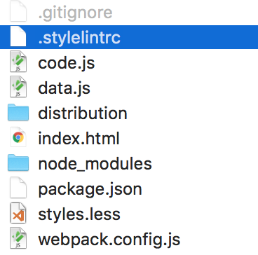
Here's what the content looks like:
{
"rules": {
"max-empty-lines": 4
}
}
The max-empty-lines rule is just an example. You can find a full list of rules on the Stylelint homepage. Glance through it and add the rules you like!
Having done that we need to add a script to run the linter. Put the following into the scripts section of package.json:
"lintless": "stylelint styles.less",
Make sure your command matches what you've chosen to call your style file.
To test, make a change in the LESS file that violates a rule and run...
npm run lintless
...and you'll see something like:
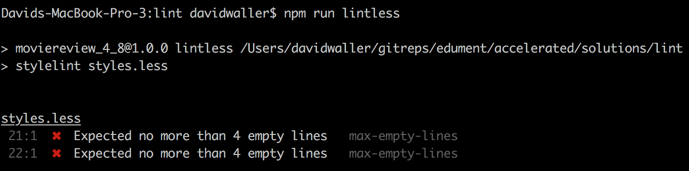
It would also be valuable to get this feedback directly in the editor. In VSC, go to the extensions tab and find the Stylelint extension:
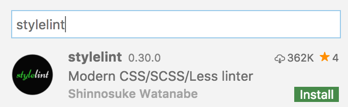
Now VSC will show the errors as you code:
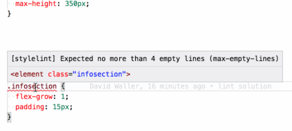
Ok! Time to make a very similar journey for our JavaScript. Our linting tool here will be ESLint.
We install it from npm as per usual, yet again:
npm install --save-dev eslint
We'll need two new files:
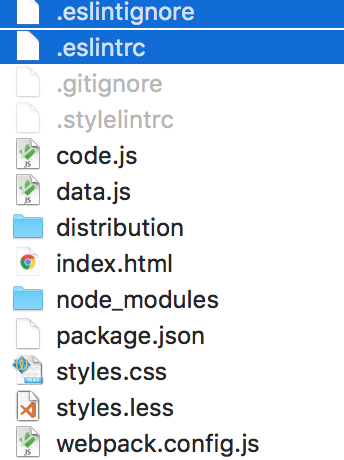
The configuration in .eslintrc looks like this:
{
"parserOptions": { "ecmaVersion": 6 },
"rules": {
"quotes": ["error", "double"]
}
}
Again the quotes rule is just an example of what you can do.
See the full list of ESLint rules and pick what you like!
The other file, .eslintignore, is for - surprise - listing paths that should not be linted. We have a few of those:
webpack.config.js
distribution
Go ahead and add the above to your file!
Next up we need a script to run ESLint. Add the following to the script sections of package.json:
"lintjs": "eslint ."
This simply tells ESLint to lint everything in the current folder.
Instead of linting the whole folder and ignoring some stuff, couldn't we have moved our source files into a separate directory, then tell ESLint to lint only that directory?
Yes. And that would probably be much better, especially when the number of source files grow.
But then I wouldn't get to show you .eslintignore! :D
Time to make VSC aware of what we just did! We need the ESLint extension:
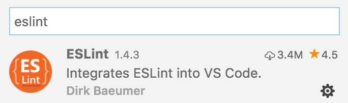
As you can see this extension is ridiculously popular.
Having done that, we now get JS rules violation feedback in the editor:
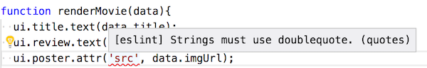
You are done when...
- there's a
lintjscommand - non-source js files are not linted
- there's a
lintlesscommand - there's a
lintcmnd that runs both - errors from both linters are shown in VSC
If you get stuck, see the Lint solution.
Continuous Integration
Understand what continuous integration is and why we do it
In modern JS development, continuous integration is a very important term.
The idea behind it is to make it cheaper to merge new code.
We accomplish this by automating all checks possible. This frequently includes:
- Making sure the build works
- Applying the linter rules
- Running the unit tests
Wait... shouldn't the developers always do this?
Yes. But...
This is such a small change, surely nothing can break
...etc. In essence, humans can't be trusted.
Also, research shows that simply knowing that rigorous testing is applied to all code will make the team...
- feel more ownership for the code
- feel more trust for the code
...which are both very valuable things.
So, how is this all accomplished? We use a continuous integration system.
These used to be server-based, such as https://jenkins.io/. Very powerful, but also rather fiddly to set up.
Now it is more popular to use CI as a service solutions.
Two popular ones are https://travis-ci.org/ and https://circleci.com/.
Next up we'll try our hand at the latter!
Exercise - CircleCI
Goal: Hooking up CircleCI
As previously mentioned there are many tools available to do continuous integration as a service.
We'll be using CircleCI!
Here's the battleplan:
- aSign up for CircleCI
- bSetup a project
- cConfigure our repo
- dTry it out
First we have to sign up.
- Go to https://circleci.com and hit the sign up button to the top right**
- Next, choose Sign up with Github
- On the new screen, log in with your Github credentials
- Next, agree to authorize CircleCI
You should now arrive at your brand new CircleCI dashboard!
Time to connect your repo!
Hit the Add project button to the far right:
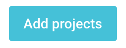
You'll now see a filterable list of all your repos on Github.
Find the correct repo and hit the Setup project button next to it.
On the settings screen choose Linux, version 2.0 and Node:
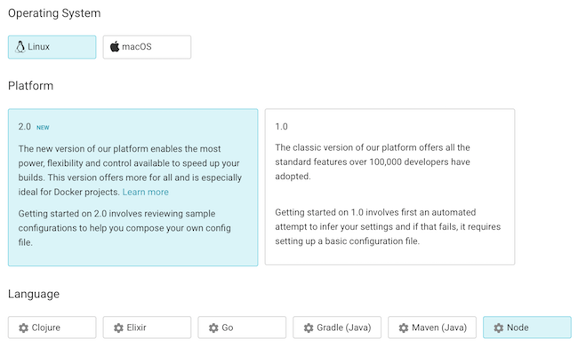
All done here, well done!
Finally we have to configure CircleCI by adding configuration files to our repo!
In your project, add a folder called .circleci with a config.yml inside it!
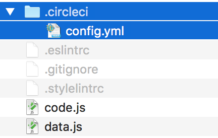
Inside config.yml, paste the following:
version: 2
jobs:
build:
working_directory: ~/tmp
docker:
- image: circleci/node:7
steps:
- checkout
- run: npm install
- run: npm run build
- run: npm run lint
This instructs CircleCI how to build and lint the project.
Time to try this out! Do a regular add, commit and push of your new config file.
Now go back to the CircleCI dashboard in the browser and click Builds in the top left corner. You'll see something like this...
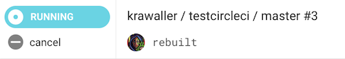
...which will then turn into this:
...except if there was a problem. Then you'd instead see red, and clicking that would show the output log. You'd also get an email saying things went belly-up.
Try this by
- making a small lint violation in your LESS file
- adding, committing and pushing the error
You are done when...
- CircleCI tries to build and lint your app on every push
- You are notified via mail when it fails
If you get stuck, see the CircleCI solution.
Pull requests
Or: why programming is AWESOME
Employing continuous integration for pull requests
Getting an email whenever someone pushes faulty code is useful.
But, ideally, we'd want to prevent that from happening at all. Fortunately this is rather easy to do, since we can disallow merging of pull requests with errors!
Here's the normal flow when we work:
- team member has repo cloned on local machine
- she creates a new branch whenever she starts a new feature
- she implements the feature in that branch
- when done she'll open a pull request from that branch to master
- others will look through the code ("code review")
- when enough ppl have agreed the branch is merged
Hooking up continuous integration into the Pull Request flow simply means that we want Github to prevent merging unless CircleCI says all is ok!
This will purely be a configuration on Github. Github provides a plethora of integration possibilities, and listening to CircleCI + friends is just one of them.
Exercise - Run CircleCI on PR:s
Goal: Prevent breaking PR:s
Here's the plan:
- aset up your master branch to be protected
- bmake a PR to someone else
- chave someone else make a PR to you
First off, head over to your repo Github to start setting it up!
Go to the settings tab to the far right.

Once there choose Branches and select master as the protected branch:
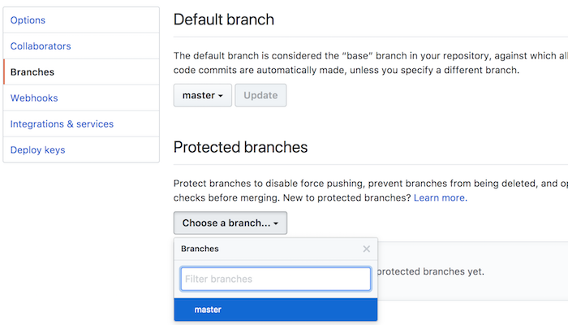
Tick the boxes like this...
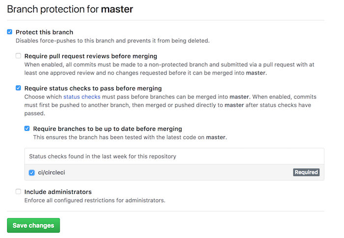
...and hit Save changes at the bottom.
That's it - now CircleCI will run on every pull request!
Time to test the protection of a friend!
Go find a classmate who has completed the previous step.
Navigate to their repo on Github, click Clone or download and then the Copy to clipboard button!
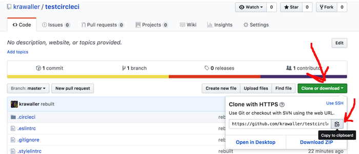
In your terminal, navigate somewhere were you can put new projects and type:
git clone <paste-to-get-url-here>
You paste the address by right-clicking in the terminal and selecting paste.
Now navigate into the new project. The folder has the same name as the repo you cloned.
cd myfriendsreviewsite
Once inside, create a new branch.
git checkout -b somenewbranchname
Open the folder in VSC, and make a bad change to a file somewhere so that the linter protests of the build won't work.
Then do:
git add .
git commit -m "awesome change"
git push -u origin somenewbranchname
Now go back to their repo on Github. Github will see your new branch and show a convenient Compare & pull request button. Hit that!
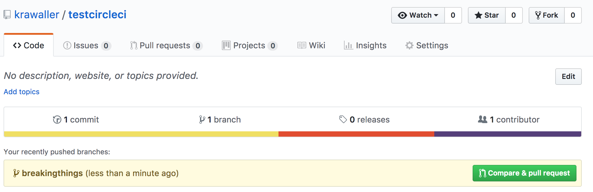
On the next screen add a message explaining what you've done and hit Create pull request!
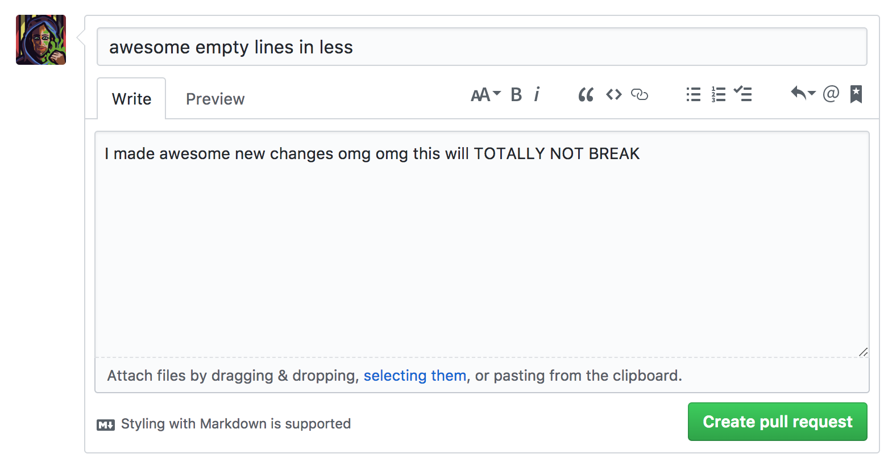
Inside the PR you'll see the CircleCI tests running, and eventually show an error.
On your friend's machine the merge button will be shown in red.
Now fix the code and push a new commit. Watch the PR update and the merge button go green!
Having done all that, make someone do the same to you to make sure that your branch is protected too!
You are done when...
- a breaking PR cannot be merged to your repo
- someone has successfully merged a PR to your project
- you have a PR merged to someone else's repo
Netlify
Learn about hosting services
Meet your new best friend!
Netlify is a hosting service. The tagline:
Write frontend code. Push it. We handle the rest.
It's not just a pure hosting service though - the beautiful thing is that it...
- integrates with Github
- can publish a subdirectory
- knows Node and can run build scripts
...which all seems like an excellent fit for our setup!
And we'll go fix it right now, with step-by-step instructions in the exercise!
Exercise - Netlify
Goal: Autopublish our app online
- asign up on Netlify
- bconnect your repo
- cconfigure the build
- dconfigure the site
Go to https://app.netlify.com/signup, and choose to sign up with your Github credentials.
This will allow Netlify to connect to your repos.
Once logged in, click New site from Git:
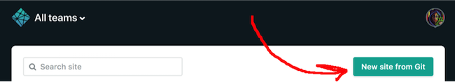
On the next screen, select Github:
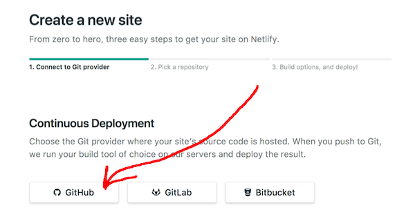
Next you'll have to find the correct repo among a list of all your repos. If you have many, use the search field to the right.
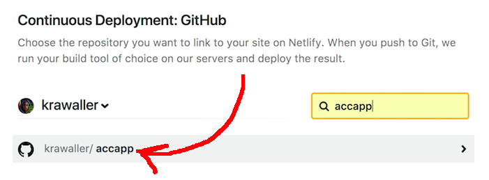
Once you find it, click it!
We must now tell Netlify which folder to publish and what command to run:
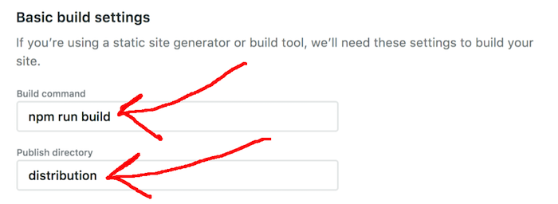
We can also specify a branch and advanced options, but we won't need either.
Your new app will get a random name - let's fix that! Go to the Settings tab:
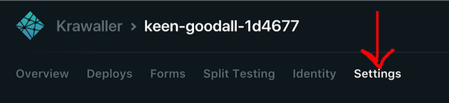
On that screen, in the Site information section, hit Change site name:
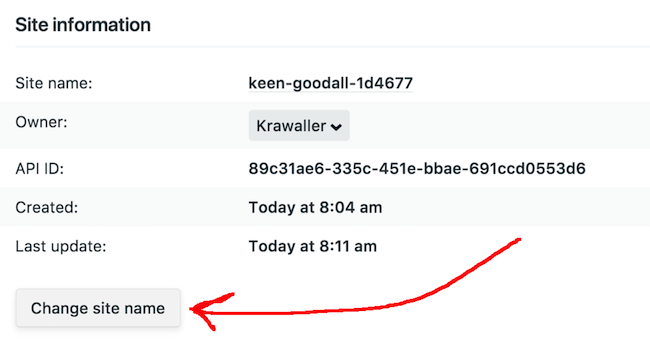
Now for the magic - if you change your site name to myawesomereviewsite, then...
- your site is visitable at
http://myawesomereviewsite.netlify.com - it updates whenever you push to Github!
But, since I've already used myawesomereviewsite, you'll have to pick something else! :)
You are done when...
- The app is visitable online
- Pushing to
masterupdates the app